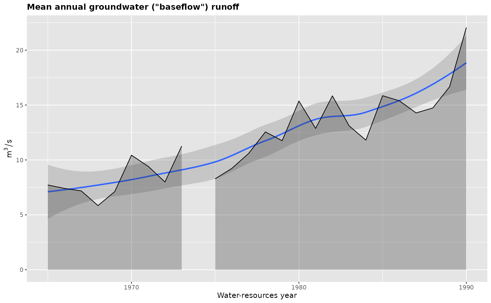

This function plots the hydrograph separation variables produced by gr_summarize(). Different background fill colors and line types are used to differentiate seasons and variable types.
Usage
gr_plot_vars(
df,
...,
tests = NULL,
exclude = NULL,
smooth = TRUE,
layout = as.matrix(1),
pagebreak = FALSE,
print = TRUE
)Arguments
- df
data.frameof hydrograph and meteorological variables produced bygr_summarize().- ...
Quoted sequence of variable names.
- tests
listof tests for the same variables (generated bygr_test_vars()function). If tests are specified, then they are added to the plot.- exclude
Integer vector of years to be excluded from plotting.
- smooth
Logical. If
TRUEthen local smoothing regression is plotted. Defaults toTRUE.- layout
matrixthat encodes the order of plotting.- pagebreak
Logical. Whether to break page between plots (
gr_report()). Defaults toFALSE.Boolean. Print plot? Defaults to
TRUE. UseFALSEif you want to tweak the plot aesthetics before plotting.
Examples
library(grwat)
data(spas) # example Spas-Zagorye data is included with grwat package
# separate
sep = gr_separate(spas, params = gr_get_params(reg = 'center'))
#> grwat: data frame is correct
#> grwat: parameters list and types are OK
# summarize from 1965 to 1990
vars = gr_summarize(sep, 1965, 1990)
#> Warning: There were 4 warnings in `dplyr::summarise()`.
#> The first warning was:
#> ℹ In argument: `Dspstart = min(.data$Date[which(.data$Qspri > 0)])`.
#> ℹ In group 10: `Year1 = 1974`.
#> Caused by warning in `min.default()`:
#> ! no non-missing arguments to min; returning Inf
#> ℹ Run `dplyr::last_dplyr_warnings()` to see the 3 remaining warnings.
# plot one selected variable
gr_plot_vars(vars, Qygr)
#> Warning: `aes_string()` was deprecated in ggplot2 3.0.0.
#> ℹ Please use tidy evaluation idioms with `aes()`.
#> ℹ See also `vignette("ggplot2-in-packages")` for more information.
#> ℹ The deprecated feature was likely used in the grwat package.
#> Please report the issue at <https://github.com/tsamsonov/grwat/issues>.
#> Warning: Removed 1 row containing non-finite outside the scale range (`stat_smooth()`).
#> Warning: Removed 1 row containing missing values or values outside the scale range
#> (`geom_ribbon()`).

# plot two variables sequentially
gr_plot_vars(vars, D10w1, Wsprngr)
#> Warning: Removed 1 row containing non-finite outside the scale range (`stat_smooth()`).
#> Warning: Removed 1 row containing missing values or values outside the scale range
#> (`geom_point()`).
 #> Warning: Removed 1 row containing non-finite outside the scale range (`stat_smooth()`).
#> Warning: Removed 1 row containing missing values or values outside the scale range
#> (`geom_ribbon()`).
#> Warning: Removed 1 row containing non-finite outside the scale range (`stat_smooth()`).
#> Warning: Removed 1 row containing missing values or values outside the scale range
#> (`geom_ribbon()`).
 # four variables in matrix layout with tests calculated on the fly
gr_plot_vars(vars, Qspmax, Qygr, D10w1, Wsprngr,
layout = matrix(1:4, nrow = 2, byrow = TRUE),
tests = TRUE)
#> Warning: Removed 1 row containing non-finite outside the scale range (`stat_smooth()`).
#> Warning: Removed 1 row containing missing values or values outside the scale range
#> (`geom_ribbon()`).
#> Warning: Removed 1 row containing non-finite outside the scale range (`stat_smooth()`).
#> Warning: Removed 1 row containing missing values or values outside the scale range
#> (`geom_ribbon()`).
#> Warning: Removed 1 row containing non-finite outside the scale range (`stat_smooth()`).
#> Warning: Removed 1 row containing missing values or values outside the scale range
#> (`geom_point()`).
#> Warning: Removed 1 row containing non-finite outside the scale range (`stat_smooth()`).
#> Warning: Removed 1 row containing missing values or values outside the scale range
#> (`geom_ribbon()`).
# four variables in matrix layout with tests calculated on the fly
gr_plot_vars(vars, Qspmax, Qygr, D10w1, Wsprngr,
layout = matrix(1:4, nrow = 2, byrow = TRUE),
tests = TRUE)
#> Warning: Removed 1 row containing non-finite outside the scale range (`stat_smooth()`).
#> Warning: Removed 1 row containing missing values or values outside the scale range
#> (`geom_ribbon()`).
#> Warning: Removed 1 row containing non-finite outside the scale range (`stat_smooth()`).
#> Warning: Removed 1 row containing missing values or values outside the scale range
#> (`geom_ribbon()`).
#> Warning: Removed 1 row containing non-finite outside the scale range (`stat_smooth()`).
#> Warning: Removed 1 row containing missing values or values outside the scale range
#> (`geom_point()`).
#> Warning: Removed 1 row containing non-finite outside the scale range (`stat_smooth()`).
#> Warning: Removed 1 row containing missing values or values outside the scale range
#> (`geom_ribbon()`).